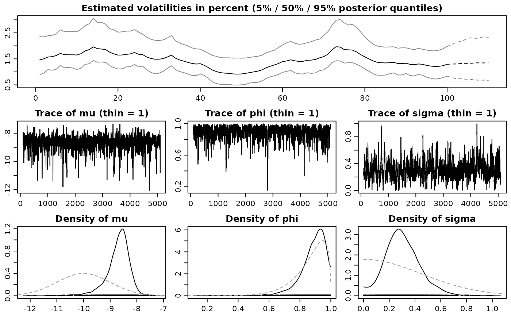

Simulates draws from the predictive density of the returns and the latent log-volatility process. The same mean model is used for prediction as was used for fitting, which is either a) no mean parameter, b) constant mean, c) AR(k) structure, or d) general Bayesian regression. In the last case, new regressors need to be provided for prediction.
# S3 method for class 'svdraws'
predict(object, steps = 1L, newdata = NULL, ...)Arguments
- object
svdrawsorsvldrawsobject.- steps
optional single number, coercible to integer. Denotes the number of steps to forecast.
- newdata
only in case d) of the description corresponds to input parameter
designmatrixinsvsample. A matrix of regressors with number of rows equal to parametersteps.- ...
currently ignored.
Value
Returns an object of class svpredict, a list containing
three elements:
- vol
mcmc.listobject of simulations from the predictive density of the standard deviationssd_(n+1),...,sd_(n+steps)- h
mcmc.listobject of simulations from the predictive density ofh_(n+1),...,h_(n+steps)- y
mcmc.listobject of simulations from the predictive density ofy_(n+1),...,y_(n+steps)
Note
You can use the resulting object within plot.svdraws (see example below), or use
the list items in the usual coda methods for mcmc objects to
print, plot, or summarize the predictions.
See also
Examples
# Example 1
## Simulate a short and highly persistent SV process
sim <- svsim(100, mu = -10, phi = 0.99, sigma = 0.2)
## Obtain 5000 draws from the sampler (that's not a lot)
draws <- svsample(sim$y, draws = 5000, burnin = 100,
priormu = c(-10, 1), priorphi = c(20, 1.5), priorsigma = 0.2)
#> Done!
#> Summarizing posterior draws...
## Predict 10 days ahead
fore <- predict(draws, 10)
## Check out the results
summary(predlatent(fore))
#>
#> Iterations = 1:5000
#> Thinning interval = 1
#> Number of chains = 1
#> Sample size per chain = 5000
#>
#> 1. Empirical mean and standard deviation for each variable,
#> plus standard error of the mean:
#>
#> Mean SD Naive SE Time-series SE
#> h_101 -10.124 0.9254 0.01309 0.02604
#> h_102 -10.047 0.9758 0.01380 0.02529
#> h_103 -9.981 1.0254 0.01450 0.02395
#> h_104 -9.914 1.0589 0.01498 0.02313
#> h_105 -9.847 1.0994 0.01555 0.02406
#> h_106 -9.818 1.1295 0.01597 0.02297
#> h_107 -9.783 1.1481 0.01624 0.02239
#> h_108 -9.750 1.1717 0.01657 0.02280
#> h_109 -9.717 1.1904 0.01684 0.02316
#> h_110 -9.689 1.1969 0.01693 0.02278
#>
#> 2. Quantiles for each variable:
#>
#> 2.5% 25% 50% 75% 97.5%
#> h_101 -12.05 -10.69 -10.089 -9.508 -8.401
#> h_102 -12.09 -10.64 -10.020 -9.414 -8.201
#> h_103 -12.16 -10.60 -9.935 -9.322 -8.053
#> h_104 -12.13 -10.55 -9.870 -9.244 -7.864
#> h_105 -12.13 -10.51 -9.804 -9.138 -7.760
#> h_106 -12.21 -10.51 -9.795 -9.084 -7.693
#> h_107 -12.27 -10.47 -9.757 -9.044 -7.630
#> h_108 -12.27 -10.45 -9.704 -8.997 -7.526
#> h_109 -12.28 -10.42 -9.676 -8.950 -7.494
#> h_110 -12.28 -10.40 -9.633 -8.918 -7.421
#>
summary(predy(fore))
#>
#> Iterations = 1:5000
#> Thinning interval = 1
#> Number of chains = 1
#> Sample size per chain = 5000
#>
#> 1. Empirical mean and standard deviation for each variable,
#> plus standard error of the mean:
#>
#> Mean SD Naive SE Time-series SE
#> y_101 -1.425e-04 0.007948 0.0001124 0.0001124
#> y_102 1.151e-04 0.008314 0.0001176 0.0001176
#> y_103 1.926e-05 0.008825 0.0001248 0.0001248
#> y_104 8.042e-05 0.009142 0.0001293 0.0001322
#> y_105 1.744e-04 0.009851 0.0001393 0.0001245
#> y_106 2.467e-05 0.010146 0.0001435 0.0001435
#> y_107 5.217e-05 0.010255 0.0001450 0.0001391
#> y_108 1.304e-04 0.011356 0.0001606 0.0001606
#> y_109 1.684e-04 0.010668 0.0001509 0.0001509
#> y_110 1.804e-04 0.010678 0.0001510 0.0001510
#>
#> 2. Quantiles for each variable:
#>
#> 2.5% 25% 50% 75% 97.5%
#> y_101 -0.01635 -0.004373 -1.471e-04 0.004002 0.01635
#> y_102 -0.01622 -0.004212 1.170e-04 0.004459 0.01715
#> y_103 -0.01754 -0.004470 1.565e-04 0.004518 0.01726
#> y_104 -0.01847 -0.004219 1.311e-04 0.004739 0.01777
#> y_105 -0.01994 -0.004403 1.440e-04 0.004801 0.02003
#> y_106 -0.02136 -0.004683 2.710e-04 0.004913 0.02050
#> y_107 -0.02146 -0.004708 7.350e-06 0.004800 0.02135
#> y_108 -0.02025 -0.004741 -6.262e-05 0.004779 0.02264
#> y_109 -0.02039 -0.004958 9.039e-05 0.005024 0.02258
#> y_110 -0.02047 -0.004923 5.886e-05 0.005107 0.02353
#>
plot(draws, forecast = fore)

# Example 2
## Simulate now an SV process with an AR(1) mean structure
len <- 109L
simar <- svsim(len, phi = 0.93, sigma = 0.15, mu = -9)
for (i in 2:len) {
simar$y[i] <- 0.1 - 0.7 * simar$y[i-1] + simar$vol[i] * rnorm(1)
}
## Obtain 7000 draws
drawsar <- svsample(simar$y, draws = 7000, burnin = 300,
designmatrix = "ar1", priormu = c(-10, 1), priorphi = c(20, 1.5),
priorsigma = 0.2)
#> Done!
#> Summarizing posterior draws...
## Predict 7 days ahead (using AR(1) mean for the returns)
forear <- predict(drawsar, 7)
## Check out the results
plot(forear)
 plot(drawsar, forecast = forear)
plot(drawsar, forecast = forear)
 if (FALSE) { # \dontrun{
# Example 3
## Simulate now an SV process with leverage and with non-zero mean
len <- 96L
regressors <- cbind(rep_len(1, len), rgamma(len, 0.5, 0.25))
betas <- rbind(-1.1, 2)
simreg <- svsim(len, rho = -0.42)
simreg$y <- simreg$y + as.numeric(regressors %*% betas)
## Obtain 12000 draws
drawsreg <- svsample(simreg$y, draws = 12000, burnin = 3000,
designmatrix = regressors, priormu = c(-10, 1), priorphi = c(20, 1.5),
priorsigma = 0.2, priorrho = c(4, 4))
## Predict 5 days ahead using new regressors
predlen <- 5L
predregressors <- cbind(rep_len(1, predlen), rgamma(predlen, 0.5, 0.25))
forereg <- predict(drawsreg, predlen, predregressors)
## Check out the results
summary(predlatent(forereg))
summary(predy(forereg))
plot(forereg)
plot(drawsreg, forecast = forereg)
} # }
if (FALSE) { # \dontrun{
# Example 3
## Simulate now an SV process with leverage and with non-zero mean
len <- 96L
regressors <- cbind(rep_len(1, len), rgamma(len, 0.5, 0.25))
betas <- rbind(-1.1, 2)
simreg <- svsim(len, rho = -0.42)
simreg$y <- simreg$y + as.numeric(regressors %*% betas)
## Obtain 12000 draws
drawsreg <- svsample(simreg$y, draws = 12000, burnin = 3000,
designmatrix = regressors, priormu = c(-10, 1), priorphi = c(20, 1.5),
priorsigma = 0.2, priorrho = c(4, 4))
## Predict 5 days ahead using new regressors
predlen <- 5L
predregressors <- cbind(rep_len(1, predlen), rgamma(predlen, 0.5, 0.25))
forereg <- predict(drawsreg, predlen, predregressors)
## Check out the results
summary(predlatent(forereg))
summary(predy(forereg))
plot(forereg)
plot(drawsreg, forecast = forereg)
} # }